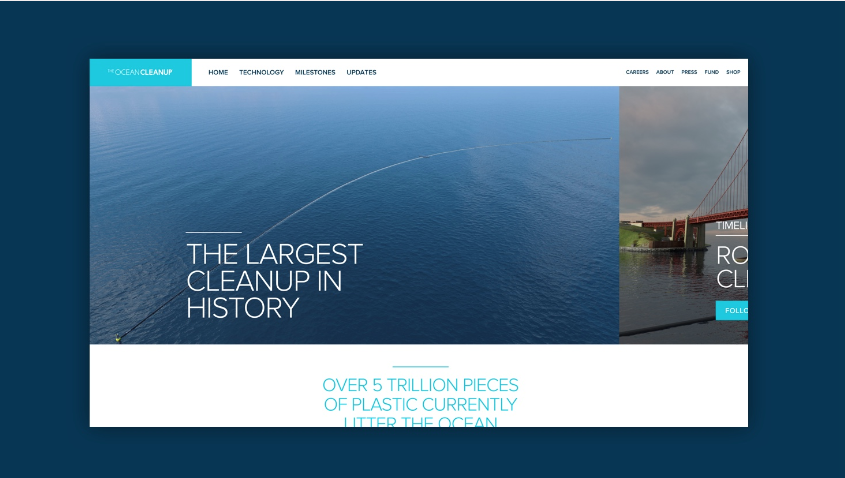
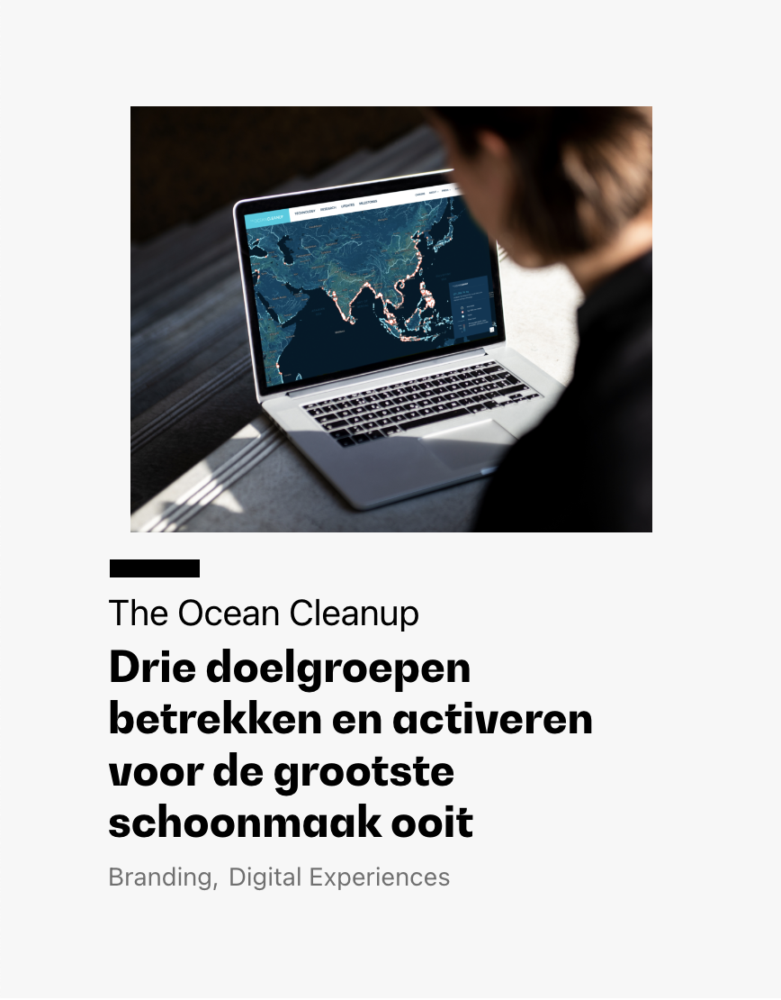

Deadline feb 13, 2023
We believe that climate-tech startups have the power to make a significant positive social impact on a large scale. We want to help these startups get on their feet, faster. That’s why we’re investing €50.000 in a startup fund, providing promising pioneers with the tools they need to push their mission further.
GRRR is a creative digital agency for Meaningful Matters. We strive to make the world cleaner, fairer and more colourful, and have been working towards this mission for over 20 years now. We were the first Dutch digital creative agency with a B-Corp certificate, and our focus on impact strategy, inclusive design and ethical tech has been recognised with 33 international awards and nominations. Seeing our work realised in the success of companies like The Ocean Cleanup (with xx result), Fastned (with xx result) and SkyNRG (with xx result) is what keeps us going.
The startup fund was born from our mission: helping all organisations become more meaningful, regardless of where they’re at on their impact journey. We took this one step further.
Design goes beyond what looks nice. It’s your brand's personality; how it looks, talks, reacts and interacts with people. Good design can make a brand easier to understand, to use, more memorable and more accessible. It gets your mission across and your message out there. That’s why we're funding climate-tech startups; we want to give them the power to stand out, to make even more impact, to be even more successful, and ultimately, to build towards a more sustainable future.
You’ll enter the brand-pressure cooker, a fast-paced brand immersion, together with our team of brand identity experts. We’ll guide you through the process of (re)defining your mission and messaging, followed by visualising your brand, over the following four phases:
At the end of the process you’ll be armed with a clear
Applications are open to climate-tech companies who are on the early stage of their startup journey. Applicants will be assessed based on the questions answered in the application form, but must also be able to:
We’d like to ensure the fund applicant is chosen fairly and accurately. GRRR will form a small, confidential panel to review the applications. If there is no clear candidate, GRRR reserves the right to either extend the deadline or postpone the fund until there is a suitable applicant. All work submitted will remain confidential and not disclosed to third parties.
Deadline feb 13, 2023
This is a project by GRRR - creative agency for meaningful matters, based in Amsterdam.